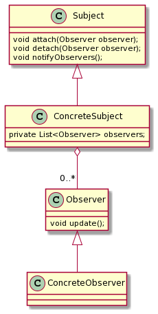

Observer Pattern
Overview
观察者模式是对象的行为模式，又叫做
发布-订阅模式 (Publish/Subscribe) 模式，
模型视图模式 (Model/View) 模式
源-监听器 (Source/Listener) 模式
从属者 (Dependents) 模式
观察者模式定义一种一对多的依赖关系，让多个观察者对象同时监听某一个主题对象。 这个主题对象在状态上发生变化时，会通知所有观察者对象，使它们能够自动更新自己。
我在当秘书时，上有办公室主任，副厂长，厂长和书记这些领导，每年的年终工作报告需要诸位领导过目，对于这个报告，领导们都是观察者
@startuml
Subject <|-- ConcreteSubject
Observer <|-- ConcreteObserver
ConcreteSubject o-- "0..*" Observer
class Subject {
void attach(Observer observer);
void detach(Observer observer);
void notifyObservers();
}
class ConcreteSubject {
private List<Observer> observers;
}
class Observer {
void update();
}
class ConcreteObserver {
}
@enduml